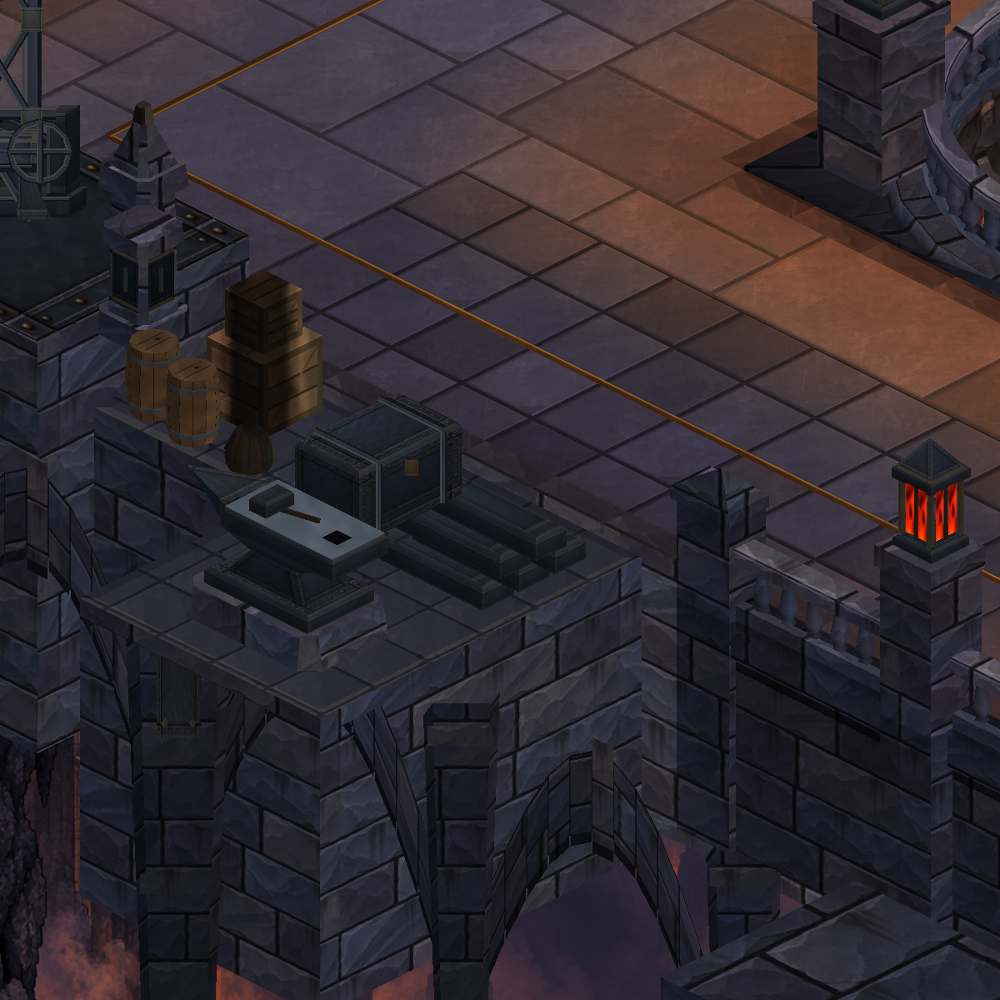
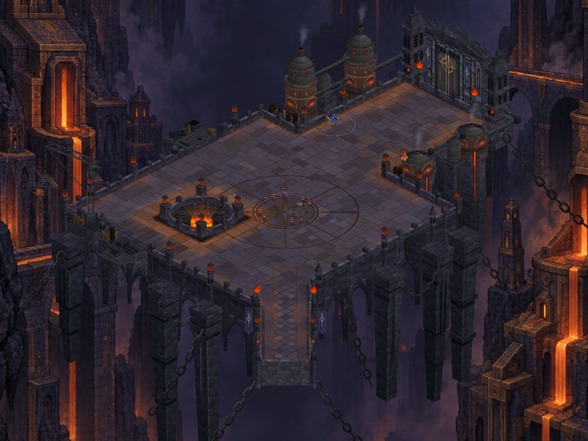

Dökümhane — kapı, vinç ve atölye
Üç ajanın ayrı dosyalarda geliştirdiği işler birlikte doğrulandı: taş kapı alınlığı, vincin taşıyıcı kolu/makarası, örs ve asılı aletler. Solda önce, sağda sonra; gerçek Unity görüntüleri.
17 statik çizim grubu; 78.232 → 78.820 köşe (+%0,75). Doğrulama kaydı
gate-detail — önce / sonra
crane-detail — önce / sonra
workshop-detail — önce / sonra


pipe-storage-detail — önce / sonra
overview — önce / sonra


Telefonda başlangıç — önce / sonra
545 test geçti; paket yüklendi. Sabit inceleme: 59,7–59,9 FPS, GPU 3,8 ms. Bir örnekte en uzun kare 33,4 ms. Profil korundu.
Kapıya yaklaşım — önce / sonra
Aynı sürükleme rotası; zamanlamadan küçük konum farkları oluşabilir. Yüksek alınlığın bir bölümü mevcut HUD arkasında kalıyor; tam yapı yukarıdaki Unity görüntüsünde incelenebilir.